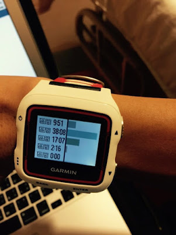

最大心率只能實際用測的，不能套公式
身邊已經有不少朋友開始使用心率錶來訓練，但大部分的跑者還是只看錶面上顯示的每分鐘心跳數（beat per minute, bpm）。這個數值對跑者本身的意義並不大，就像你看錶上顯示 160 bpm(每分鐘心跳 165 次)時，對於最大心率 200 bpm 的人來說，這個強度還在非常有氧的區間，但對於最大心率為 170 bpm 的人來說，當心率達到 165 bpm 時代表強度已經非常高了！
在訓練時對我們有意義並非心率，而是「心率區間」。心率區間可由最大心率（或儲備心率）的百分比計算出來，所以我們必須先知道自己的最大心率。藉由最大心率來定義心率區間之後才能發揮出心率錶該有的功能。
那要怎麼知道自己的最大心率呢？
大部分的人會直接採用網路或書本上的公式進行計算，但那「非常不妥」，原因在於公式計算出來的最大心率是某個特定族群的平均值(相同年齡、性別或體重的人)，以最常見的「220-年齡」來說，等於是假設相同年齡的最大心率都一樣，但你我都知道，跟你同樣歲數的人，最大心率可能差很大！
要怎麼測呢？
有三種方法，我認為最佳的方式是在約四百公尺的陡坡(5%)上進行，若住家附近找不到這樣的坡，可以改在操場和跑步機上測。下面是我參考了許多檢測方式後所擬定的 SOP，這份 SOP 目前都實作過多次，都還蠻順的，大家可以參考。請見本文最後。
此外，耐力網已把【SOP 3：跑步機版】的檢測流程帶到馬拉松世界台北門市(馬拉松世界還特地為此買了一台跑步機，還派出店長跟我進行實作演練)，我們的目的就是希望已經有心跳錶的朋友可以找到自己的最大心率。
時間是從 8/5 起，每個星期三晚上 7 點以後，服務內容是找到自己的最大心率和心率區間，它們在臉書釋出的報名資訊如下：
●費用：100 元
●門市地址：台北市中正區愛國東路 70 號
●預約電話：02-2358-3797
●限額人數：5 名
●測量時間：1 名約 10-15 分鐘
建議是帶自己平常訓練和比賽中常用的心跳錶，如此才會符合你平常訓練的需求。因為這個流程是我參考國外運動生理書籍後修訂出來的流程，希望在檢測的過程中也能聽到大家的意見再把這份 SOP 修到更完善。
心率區間該怎麼定義？
心跳錶一般統一都分為五個心率區間，而且各家所定義的百分比都不同，我後來統一都遵循 Jack Daniels 在《丹尼爾博士的跑步方程式》中的定義。因為丹尼爾博士在書中只有列出最大心率法，我和譽寅參考美國運動醫學學會(ACSM)的研究資料，也把儲備心率法定義出來，用到現在覺得更適合跑者們，目前也都建制到到耐力網上，只要輸入檢測出來的最大心率和安靜心率就會算出你目前的五級心率區間，進入下方網址後，點選「心率區間檢測」即可：
http://www.center4gaming.org/c4g/index.php/estimate/index
若想瞭解各心率區間的意義，也可參考之前拍攝的影片：
Garmin 920XT 的「區間內時間」統計分析功能是我訓練後必定看的分析數據之一：

照片中是今天在台北繞中正紀念堂六圈，跑 M 配速(第 2 區)1 小時+6ST 課表後的統計值：
●1 區：9 分 51 秒
●2 區：38 分 08 秒
●3 區：17 分 07 秒
●4 區：2 分 16 秒
●5 區：0 秒
由這個統計值就可以知道今天有 17+2(分鐘)的時間跑太快了，應該再「更有耐心」一點才對……
==最大心率檢測的三個 SOP==
【SOP 1：陡坡版】
一、先戴上心率錶慢跑暖身十分鐘後，手摸脈搏來確認心率錶上的數值跟實際的心率相符。
二、第一趟：用自覺的八成力去跑完第一趟的 400 公尺陡坡，到坡頂後查看心跳數。完成慢跑下坡，在坡底休息 3 分鐘，接著跑第 2 趟。
三、第二趟：用自覺九成力衝上坡(不要用全力)，到坡頂後一樣記得查看心跳數。完成慢跑下坡，休息 3 分鐘。
四、第三趟：用自覺十成力衝上坡(全力以赴)，此時我們會得到一組最高的心率數值。假設跑者 A 第三趟跑出的心率是 190 bpm，但還沒結束，接下來你要告訴自己：「第四趟我要比前一趟的心率再多一下，以跑者 A 來說，他心理上的目標是 191 bpm」。第三趟之後到坡底的休息時間都延長為 5 分鐘。
五、第四趟：跑第四趟的用意是要確保你的心率是不是已經到達極限。，但如果第 4 趟測到更高的數值，就要依前一個步驟再跑一趟，直到你再也跑不出比前一趟更高的心率為止，這樣量測到的才會是我們的最大心率。
也就是說：「最大心率會在倒數第二趟」，影片說明：
【SOP 2：四百公尺操場版】
流程全跟 SOP 1 一樣，只是因為是平路，所以距離全改成 800 公尺。
【SOP 3：跑步機版】
一、先找出自己處於乳酸閾值的臨界速度，可以利用耐力網能力檢測的功能()，輸入自己 3K、5K、10K 或半馬的最佳成績，按檢測，右下角的 T 配速即為你的臨界速度(點選「時速」可以切換成跑步機常用的速度單位)。例如：10KM 最佳成績為 50 分，輸入耐力網後可得知 T 配速為 11.8 km/hr。
二、先確認心率監測器正常運作：戴上心率錶，試跑 1 分鐘後，按脈博算 10 秒的心跳數再乘以 6，看是否跟心跳監測器讀到心率一樣。
三、接著以自己熟悉的配速在跑步機上面熱身 10 分鐘，開始時會以 T 配速(以上述為例即是 11.8 km/hr)進行檢測。
四、之後 2 分時會上升 1%坡度，重複這個循環，如果表示不行時，請努力撐完最後 30 秒，結束後就可以檢測到受試者的最大心率。